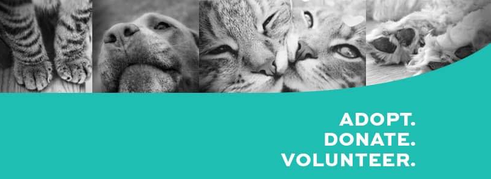

Welcome to Urban Paws - Empowering Stray Animal Management and Adoption
Urban Paws is a revolutionary software platform and website dedicated to transforming the way we track, manage, and care for stray animals in urban settlements. Our mission is to create a safer, more compassionate environment for both stray animals and the communities they coexist with.Key Features:
1. Comprehensive Animal Tracking and Behavior Analysis:
Keep a watchful eye on every stray animal in the area with our cutting-edge GPS tracking technology. By analyzing their behavior patterns, we gain valuable insights into their movements, social interactions, and needs, helping us better understand their unique situations.2. Facilitating Adoptions for Forever Homes:
At Urban Paws, we believe in second chances. Our user-friendly adoption platform connects potential pet parents with lovable stray animals looking for a forever home. Filter by age, breed, temperament, and more to find the perfect furry companion to enrich your life.3. Public Reporting Made Easy:
Empowering the community to play an active role in stray animal management, our system offers a seamless way for users to report sightings, injured animals, or other concerns with a few simple clicks. Together, we can respond swiftly to emergencies and ensure the safety of both animals and residents.4. Real-Time Emergency Alerts:
The safety of stray animals and the community is of utmost importance to us. With our instant alert system, authorized organizations and individuals receive immediate notifications about critical incidents, enabling swift responses in times of need.5. Data-Driven Insights for Effective Management:
Urban Paws leverages the power of data analytics to make informed decisions and optimize our approach to stray animal management. Discover trends, hotspots, and behavioral patterns, enabling us to proactively address issues and improve the overall well-being of the animals.